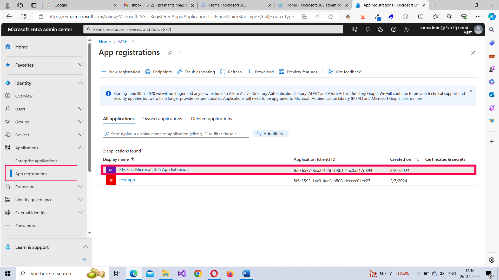
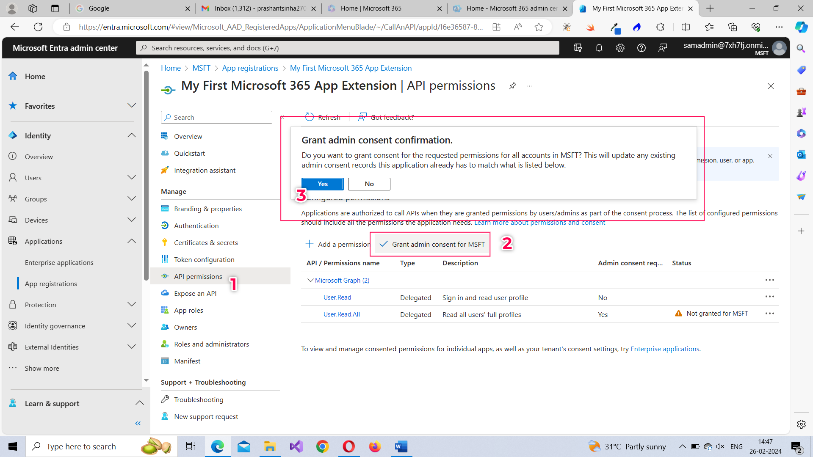
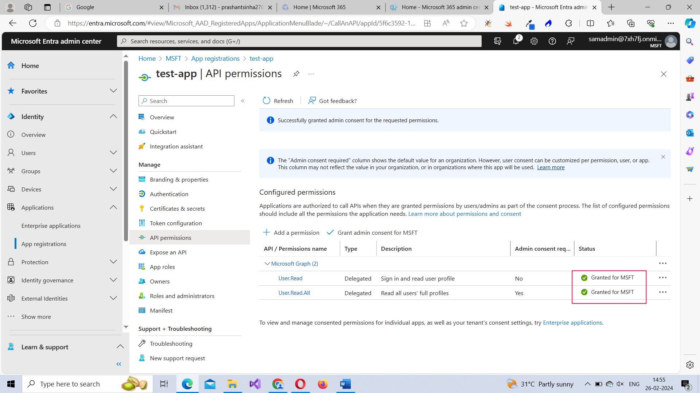
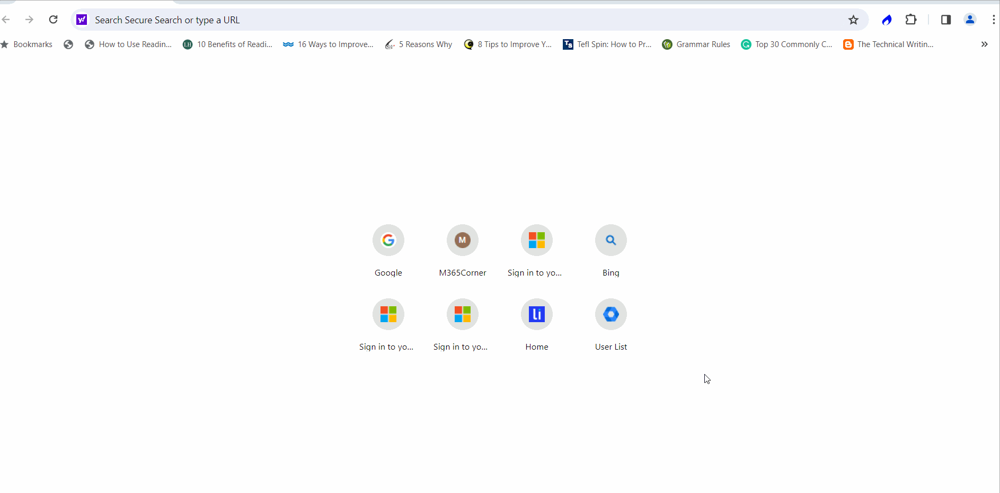
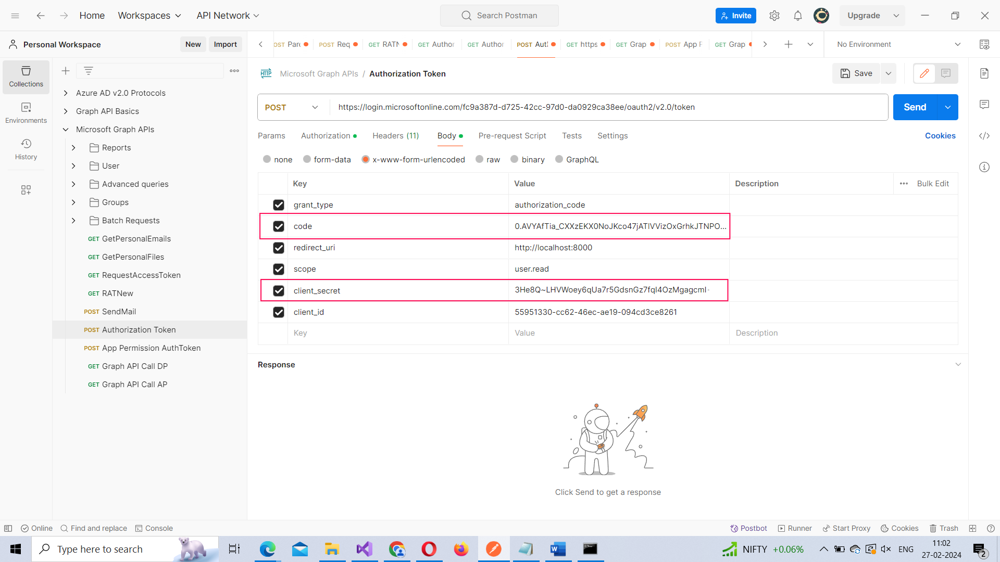
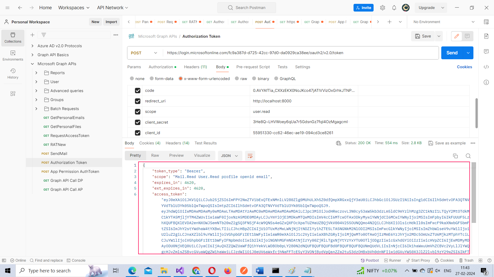
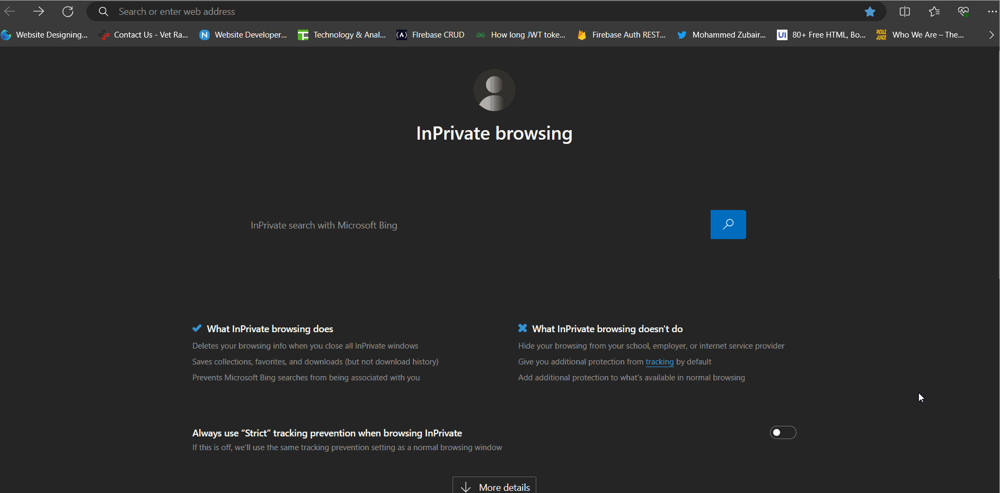

There are two ways in which a tenant admin can consent to the app permissions your app requested for in the previous article:
Let’s understand both these methods though the second one is the most preferred one since the tenant admin probably does not have the enough time to access Microsoft Entra ID Admin Center to approve the permissions your app is requesting for.
Note: Since you have a Microsoft 365 E5 subscription at your disposal and are in the early stages of Microsoft 365 API based app development, you can try out the app you are developing as the tenant admin too.
Once you are within the App registrations page of the Microsoft Entra ID Admin Center, select the app you configured earlier. Next go to the API permissions tab and click on the Grant admin consent for MSFT option. Click Yes in the Grant admin consent confirmation message to grant all the permissions requested by the app.
 Once the permission is granted for the app, the status of the API permissions turns to Granted for MSFT as shown in the image.
This is the Microsoft 365 login endpoint your app should make the API call to to get the tenant admin to consent to the delegated permissions your app is requesting for. For testing purposes, you don’t need to make the API call formally from your app. You just need to use this URL and pass in your tenant ID and Client ID and see how the tenant admin can consent to the requested permissions.
Note: You should run a simple web server containing the redirect URI path you configured while setting up the app. Because this is the path to which the response gets returned. If you try to execute the below URL without running the server, you’ll run into an error.
https://login.microsoftonline.com/{tenant-id}/oauth2/v2.0/authorize?client_id={client-id}&response_type=code&redirect_uri=http://localhost:3000&scope=user.readwrite.all&response_mode=queryYou’ll notice that the following in the URL:
You can see how executing the above URL requests tenant admin to grant app permissions using the animated GIF below.
Note: You can access your app’s API permissions page within the Microsoft Entra ID admin center and confirm whether the API permission has been granted or not.
Once the tenant admin has consented to your app permissions, you receive a code in the response as shown below. You’ll have to reproduce this code in order to get the authorization token (that helps you authorize your app and thereby access the protected Microsoft Graph (Microsoft 365) APIs).
http://localhost:3000/?code=0.AT0AzAza6ijktkmmds-CSj44UIdl4_ajjltFuLFKwKUX2JShAAA.AgABAAIAAADnfolhJpSnRYB1SVj-Hgd8AgDs_wUA9P--Y067a42RnwdWb5jk9YRs2EBxUi3iNsQsO_4hvhpDX2IJ8T6zV4HDWqP7X5aaARRcXkwfs8JvfrIvS9WcqnHAM-0JPYYkgyFNxvSGc6rpRowUADRpZE3OV5aGy8SI8PA3zNtSTteglvK4QfB5rX4p2fgKQ7uIkYG4YMBvLedEC5rgwuxzTQGoHCRf6PicdijF-fAedFYZAkjETHuJAQxc-77lT0kDTuQnVtmXZhf8ss4s8P_EfI6SYDouZzCJwtnIxM1SMs5-4egI5P-nT1ZT7hyTwAEAyP2SCFwVPK6RNPO2mtYfML4lYcNzyPVgQumECoHZNtDh-Xhd9GBDknyrJR3zj2fntVEEyehh8Fwt-Z8tlzJbMFwZ9IqZBt7R_F8PfyRKqgcEOx9II_qFAuImZPdzGk_vQdyVFGU2IRGwtws3ujmju_8gPOgx_Use postman to make the API call for getting the authorization token. This is the endpoint you have to query to get the authorization token: https://login.microsoftonline.com/{your-tenant-id}/oauth2/v2.0/token. As you can see, you’ll have to pass in your tenant-id to this endpoint.
Your authentication token request should look like the one shown in the image below. It has to contain the code you received and the client_secret you generated earlier, among other things.
Other properties you need to pass in the request:
You should receive the authentication token in the response as shown in the image. You’ll also notice the response contains app permissions too. Just like any auth token, it has an expiry time as well.
You need to make use of this authentication token in your subsequent requests to authorize your app when you query Microsoft Graph (or Microsoft 365) APIs.
This is the Microsoft 365 login endpoint your app should make the API call to to get the tenant admin to consent to the app permissions your app is requesting for. For testing purposes, you don’t need to make the API call formally from your app. You just need to use this URL and pass in your tenant ID and Client ID and see how the tenant admin can consent to the requested permissions.
https://login.microsoftonline.com/{tenant-id}/adminconsent?client_id={client-id}&redirect_uri=http://localhost:8000Note: You should run a simple web server containing the redirect URI path you configured while setting up the app. Because this is the path to which the response gets returned. If you try to execute the below URL without running the server, you’ll run into an error while trying to grant permissions for the app as the tenant admin.
You’ll notice that the following in the URL:
You can see how executing the above URL requests tenant admin to grant app permissions using the animated GIF below. Also notice how the admin_consent parameter is set to true, when the tenant admin grants your app the required permissions.
Note: You can access your app’s API permissions page within the Microsoft Entra ID admin center and confirm whether the API permission has been granted or not.
Once the admin has consented to your app permissions, your app can apply for auth token and authorize itself before it starts making Graph API calls. The endpoint for making Graph API calls is shown below.
https://login.microsoftonline.com/{tenant-id}/adminconsent?client_id={client-id} &redirect_uri=http://localhost:8000As you can see, you’ll have to pass in your tenant-id and client-id to this endpoint.
Use postman to make the API call for getting the authorization token. Your authentication token request should look like the one shown in the image below. It should contain the following parameters.
Now that you know how tenant admins can consent to your app permissions and how your app can get the authorization token required to authorize itself, in the next article, let’s understand how your app can query Microsoft 365 tenant (via Microsoft Graph API) to get the data it requires.
© m365corner.com. All Rights Reserved. Design by HTML Codex